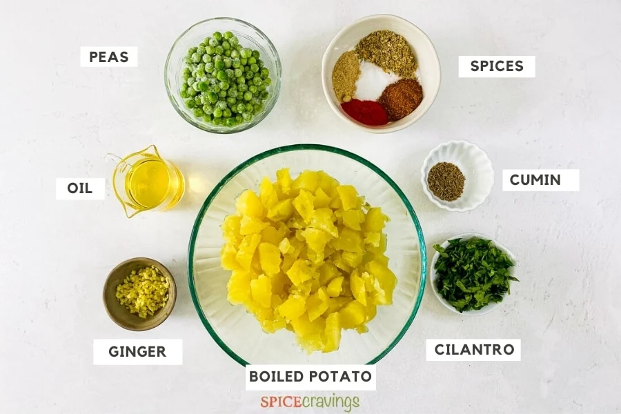

Samosa Recipe - Air Fryer, Fried & Baked
.jpg)
Samosa Dough Ingredients:

All Purpose Flour: Regular all-purpose flour, called Maida in Hindi, is all you need. I do not
recommend whole wheat flour (atta) as the dough will be too dense. If you would like to
make these a bit healthier, stick to an organic or unbleached, unbromated all-purpose flour.
Carom Seeds (Ajwain): Carom seeds, or ajwain, have a taste that is similar to thyme, anise and
oregano. Look for them in Indian food markets, specialty spice shops or online. If you cannot find
them, substitute with Mexican oregano, but half the quantity.
Avocado Oil: Avocado oil is a neutral flavored oil with a high
smoke-point that binds the ingredients into a smooth dough.
Ghee is a good substitute, but the samosas will no longer be vegan.
Cold Water: The amount of water will vary depending on the time of
year, moisture in the air and brand of flour. But the important detail
is that the water must be cold. I keep a cup of ice water ready and drizzle in 1
tablespoon of water at a time until the dough comes together.

Samosa Filling Ingredients:
Olive Oil: A few tablespoons of olive oil is a good starting point to potato samosas.
Cumin Seeds: Slightly savory and smokey, the samosa filling wouldn't be complete
without it.
Ginger: I like to finely chop fresh ginger root rather than grate it. A 1-inch
piece of ginger will give you approx 2 teaspoons chopped.
Garam Masala: This traditional and warmly scented Indian spice blend really makes
these samosa ultra-comforting. Use homemade garam masala or your favorite store-bought
brand.
Crushed Coriander Seeds: I like to slightly crush whole coriander seeds in a mortar
and pestle or pulse it a few times in a spice grinder for an authentic texture
and flavor. Ground coriander is a good substitute.
Red Chili Powder: Cayenne or Kashmiri red chili powder (a flavor combo of paprika
and cayenne) are both great options. Reduce to ¼ teaspoon for medium or skip for mild.
Dry Mango Powder (Amchur): Amchur is a fruity spice powder made from dried unripe green
mangoes and has a slight citrusy flavor. It adds that extra special pop.
Water: A few tablespoons of water prevents the spices from burning.
Gold Potatoes: Yukon gold potatoes provide the best flavor and overall texture. If you
want to get ahead, wash, peel and boil potatoes 1-2 days ahead and store in an airtight
container in the fridge.
Green Peas: Frozen green peas are easy and convenient. Remove approx ¾ - 1 cup frozen
green peas from the freezer while you make the dough and gather the rest of the ingredients.
Cilantro: A fresh and green finishing touch!